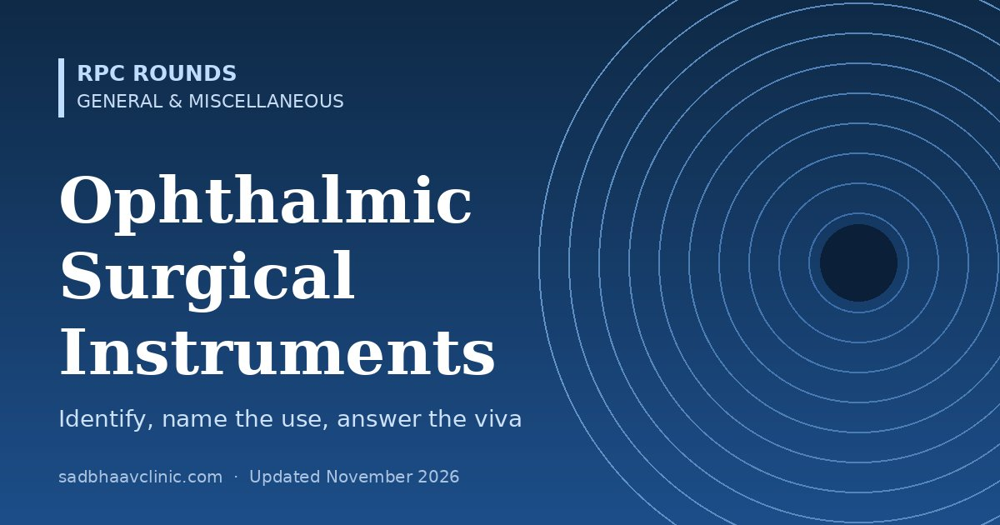

Last updated: November 2026
Instrument identification is a fixed part of MS and DNB ophthalmology practicals, and a favourite quick-fire viva. The examiner hands you an instrument and expects four things: its name, how you recognise it, what it is used for, and one follow-up fact. This page groups the common instruments by the operation they belong to, so you learn them the way you meet them in theatre.
Hold the instrument as you would in surgery while you talk. Examiners notice whether you know which way up a Sinskey hook or a keratome goes.
| Instrument | How to recognise it | Uses | Viva point |
|---|---|---|---|
| Barraquer wire speculum | Single springy wire, two curved loops, no screw | Keeps the lids open in most anterior segment surgery | Light and cheap, but cannot be adjusted; avoid in eyes with raised orbital pressure or open globe |
| Universal (adjustable) speculum | Two blades with a screw or ratchet to set the opening | Wider, controlled exposure (MSICS, trabeculectomy, retina) | Do not open it wider than needed; it presses on the globe and raises IOP |
| Plain (non-toothed) forceps | Serrated tips, no teeth | Holding conjunctiva and delicate tissue | Teeth tear conjunctiva; use plain forceps on it |
| Toothed forceps (e.g. St Martin) | 1×2 teeth at the tip | Holding sclera, skin, Tenon's | Never on conjunctiva or iris |
| Colibri (0.12 mm) forceps | Fine 1×2 teeth with a tying platform; very fine tips | Holding the cornea and sclera while suturing or making incisions | The 0.12 refers to the tooth size in mm; protect the tips |
| McPherson tying forceps | Angled, smooth, flat tying platforms | Tying fine sutures (10-0 nylon); handling IOL haptics | Smooth jaws do not crush the suture |
| Castroviejo needle holder | Fine curved jaws, often with a lock | Microsuturing with 8-0 to 10-0 needles | Use the locking type for the surgeon, non-locking for fine control |
| Barraquer needle holder | Curved, spring handle, no lock | Fine corneal and conjunctival suturing | Lighter than Castroviejo; no lock to release |
| Westcott scissors | Spring handle, short blunt or sharp blades | Conjunctival and Tenon's dissection | Also called tenotomy scissors in some sets |
| Vannas scissors | Very fine, straight or angled spring scissors | Cutting iris, capsule, fine sutures; iridectomy in trabeculectomy | The finest scissors in the set; never cut thick tissue |
| Corneal scissors (Castroviejo) | Curved blades, right and left pair | Extending a corneal section (ECCE, keratoplasty) | Comes in right and left so the cut follows the limbus |
| Bard-Parker handle | Flat handle that takes detachable blades (No. 11, 15) | Skin incisions (lids, DCR); No. 15 for most lid work | No. 11 is pointed, No. 15 is curved |
| Wet-field (bipolar) cautery | Fine bipolar tips on a cable | Haemostasis of episcleral vessels | Use the minimum needed; scleral shrinkage and wound leak follow over-cautery |
| Instrument | How to recognise it | Uses | Viva point |
|---|---|---|---|
| Keratome (angled slit knife) | Angled, flat, diamond or arrow-shaped steel blade, usually 2.2–2.8 mm | Main clear corneal incision in phaco | Width is marked on the hub; the incision should be self-sealing (triplanar) |
| Side-port blade (15°) | Narrow pointed blade at 15° | Paracentesis for the second instrument and for AC reformation | About 1 mm wide; place 60–90° from the main port |
| Crescent knife | Bevel-up, rounded crescent blade | Scleral or sclerocorneal tunnel in MSICS and SICS | Dissects in one lamellar plane; keep the blade flat |
| MVR blade (20G or 23G) | Spear-shaped, double-edged, pointed | Sclerotomies in vitrectomy; AC entry | Microvitreoretinal blade |
| Cystitome | 26G needle bent at the tip and again at the hub | Starting the capsulotomy; can-opener capsulotomy | Made on the table from a disposable needle |
| Utrata forceps | Angled forceps with fine pointed grasping tips | Completing a continuous curvilinear capsulorhexis | Grasp the flap near the base and re-grasp often |
| Sinskey hook | Fine angled shaft ending in a small hook | Rotating the nucleus, dialling the IOL, manipulating the iris | Held with the hook pointing down into the bag |
| Kuglen hook (iris manipulator) | Small two-pronged or hooked tip | Pushing or pulling the iris, dialling the IOL | Useful to retract the iris edge in small pupils |
| Chopper (e.g. Nagahara, Chang) | Angled tip, sharp or blunt, inner cutting edge | Splitting the nucleus during phaco chop | Horizontal choppers go round the equator; vertical ones go straight down |
| Simcoe cannula | Two-way cannula: irrigation line and aspiration port | Irrigation-aspiration of cortex in ECCE and MSICS | Aspiration port must face up to avoid sucking the capsule |
| Rycroft cannula | Fine angled 27G or 30G cannula | Hydrodissection, AC reformation, stromal hydration | Inject gently; a fluid wave should pass behind the nucleus |
| Wire vectis (lens loop) | Flat loop with or without irrigation ports | Delivering the nucleus in MSICS (irrigating vectis for hydroexpression) | Slide it under the nucleus, keeping the posterior capsule safe |
| Lens-holding (Kelman-McPherson) forceps | Angled forceps with smooth flat jaws | Holding and inserting a rigid PMMA IOL | Do not crush the optic |
| IOL injector and cartridge | Plunger and folding cartridge | Inserting a foldable IOL through a small incision | Check the leading haptic is forward and the lens is not upside down |
| Capsular tension ring injector | Fine plunger with a hooked tip | Inserting a capsular tension ring in weak zonules | Put the ring in after the capsulorhexis and before or after phaco, never with a capsular tear |
| Iris hooks or Malyugin ring | Flexible nylon hooks or a square polypropylene ring with an injector | Enlarging and holding a small pupil | Malyugin ring sizes 6.25 and 7.0 mm |
| Instrument | How to recognise it | Uses | Viva point |
|---|---|---|---|
| Kelly Descemet punch | Fine punch with a small biting jaw | Removing a block of the inner scleral flap (sclerostomy) in trabeculectomy | Gives a clean, sized ostium; an alternative is cutting with a blade and Vannas |
| Luntz-Dodick punch | Smaller, angled version of the Descemet punch | Sclerostomy in trabeculectomy | Same job as Kelly punch |
| Crescent blade | As above | Making the partial-thickness scleral flap | Flap about half scleral thickness |
| MMC sponges | Small cellulose sponges (on a tray, not an instrument) | Applying mitomycin C under the conjunctiva | Keep MMC away from the cut conjunctival edge; wash out with BSS |
| Instrument | How to recognise it | Uses | Viva point |
|---|---|---|---|
| Chalazion clamp | Ring (or oval plate) on one blade, solid plate on the other, with a screw | Holding the lid everted and bloodless for chalazion incision and curettage | Incise vertically on the conjunctival side to avoid cutting across meibomian glands |
| Chalazion scoop (curette) | Small sharp-edged cup on a handle | Scraping out chalazion contents | Send recurrent "chalazia" in elderly patients for histology (sebaceous carcinoma) |
| Desmarres lid retractor | Curved, saddle-shaped plate on a handle | Everting or retracting the lid for examination and surgery | Double eversion of the upper lid to look in the fornix |
| Jaeger lid plate | Flat horn or metal plate | Protecting the globe and giving a firm base during lid surgery | Used in entropion and trichiasis surgery |
| Nettleship punctum dilator | Short conical pointed tip on a handle | Dilating the punctum before probing or syringing | Insert vertically 2 mm, then turn horizontal along the canaliculus |
| Bowman lacrimal probes | Double-ended fine probes in graded sizes (0000 to 8) | Probing the canaliculi and nasolacrimal duct (CNLDO) | Probing in infants is usually done around 12 months if obstruction persists |
| Lacrimal cannula | Fine blunt bent cannula on a syringe | Syringing the lacrimal passages | Regurgitation through the opposite punctum suggests a common canalicular or NLD block |
| Freer periosteal elevator | Double-ended flat blades, one sharp one blunt | Raising periosteum in DCR, orbital floor repair | Work under the periosteum to stay in a bloodless plane |
| Kerrison bone punch | Angled biting punch with a footplate | Removing bone to make the osteotomy in DCR | Keep the footplate under the bone, away from the nasal mucosa |
| Lambert chalazion forceps | Variant of chalazion clamp | Same as chalazion clamp | Name varies between hospitals; describe the parts |
| Beer cilia (epilation) forceps | Flat broad smooth tips | Epilating misdirected lashes (trichiasis) | Lashes regrow in 4–6 weeks; electrolysis or surgery for recurrence |
| Snellen entropion clamp | Clamp with a plate and bar, screw fixation | Holding the lid during entropion surgery | Historical but still in some sets |
| Instrument | How to recognise it | Uses | Viva point |
|---|---|---|---|
| Muscle hook (Jameson, von Graefe) | Blunt hook; Jameson has a bulb at the tip, von Graefe is plain | Isolating an extraocular muscle | Hook the muscle from the side, sweeping posteriorly then forward |
| Castroviejo calipers | Two sliding pointed arms with a mm scale | Measuring recession or resection distance, keratoplasty and limbus distances | Measure from the original insertion or the limbus, as your technique states |
| Enucleation scissors | Strong curved blunt scissors | Cutting the optic nerve in enucleation | Cut at least 10 mm of nerve in retinoblastoma |
| Enucleation spoon | Spoon with a notch for the nerve | Lifting the globe forward for nerve section | Avoid excessive traction (oculocardiac reflex) |
| Evisceration spoon (curette) | Sharp-edged spoon | Scooping out uveal tissue in evisceration | All uveal tissue must be removed to reduce the risk of sympathetic ophthalmia |
| Orbital implant introducer | Funnel or sheet | Placing a spherical implant in the socket | Implant size usually 18–22 mm |
| Instrument | How to recognise it | Uses | Viva point |
|---|---|---|---|
| Corneal trephine (e.g. Hessburg-Barron vacuum trephine) | Circular blade, often with a suction ring and graduations | Cutting a circular corneal button in keratoplasty | Donor button usually 0.25–0.5 mm larger than the recipient bed |
| Foreign body spud and gouge | Small flat or rounded blade; motorised burr for rust rings | Removing corneal foreign bodies and rust rings | Use a 26G needle tangentially at the slit lamp; check eversion of the upper lid |
| Scleral depressor (Schepens) | Thimble or pen type with a small rounded tip | Indenting the sclera during indirect ophthalmoscopy | Never press through the closed lid on a recently operated or open globe |
| Indirect ophthalmoscope with +20 D and +28 D lenses | Headset with a separate hand-held condensing lens | Examining the peripheral retina; laser delivery (LIO) | +20 D: magnification about 3×, field about 45°; +28 D: about 2×, wider field |
| Vitrector and endo-illumination probe | Fine probes on cables (23, 25 or 27G) | Vitrectomy | Higher cut rates reduce traction on the retina |
| Fine-needle aspirate / vitreous tap set | 23–25G needle on a syringe | Vitreous biopsy in endophthalmitis | Send for Gram stain, culture and PCR before injecting antibiotics |
Photographs coming: clinical photographs of each instrument will be added to this page.
Where residents slip
Related: Sutures, Needles and Sterilisation in the Eye Theatre, Phacoemulsification Step by Step: A Beginner's Guide, Manual Small Incision Cataract Surgery (MSICS): Steps and Pitfalls, Lateral Canthotomy, AC Paracentesis and Pupil Examination: How-To for Residents, Instruments in Ophthalmology: Who Invented What.
📘 Want more exam-ready material? See Most Commons in Ophthalmology on Kindle, or browse all my books.
Looking for an eye specialist in Ahmedabad? Cataract surgery at Sadbhaav or book a consultation with Dr. Dhaval Patel.